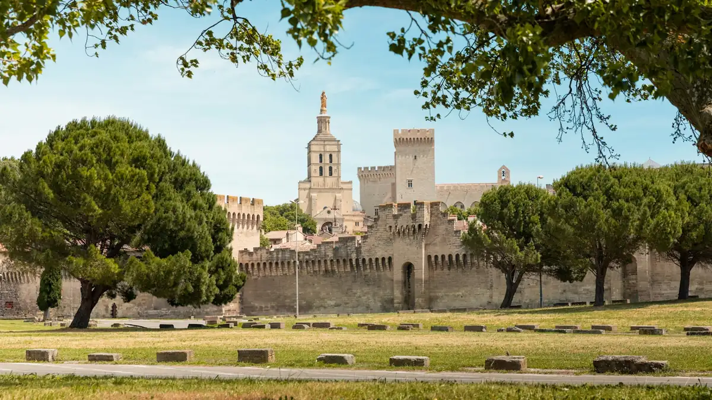

Home › Wine stories › Châteauneuf-du-Pape and the 1954 Ban on Flying Saucers
Châteauneuf-du-Pape and the 1954 Ban on Flying Saucers

Photo: Ryan Klaus on Unsplash
In 1954 the mayor of Châteauneuf-du-Pape banned flying saucers from landing among his vines – a tongue-in-cheek decree that is still on the books and even inspired a famous Californian wine.
Few wine villages have a grander back story than Châteauneuf-du-Pape. In the 14th century the popes lived down the road in Avignon, and Pope John XXII had a fortress built on the hill above the village between 1317 and 1333 as a summer retreat. The local wine was poured at the papal court, earning the reputation that the name still carries today.
The village also has a serious claim on the history of wine law. In 1923 local growers, led by Baron Pierre Le Roy of Château Fortia, formed a union and wrote their own rules: a minimum of 12.5% alcohol, a short list of permitted grape varieties and compulsory sorting of the harvest. After years in the courts, the appellation decree was published on 15 May 1936, and the growers' body proudly calls it the first wine AOC in France.
Then, in the autumn of 1954, the sky got involved. France was gripped by a wave of reported sightings of 'soucoupes volantes' and 'cigares volants' – flying saucers and flying cigars – and the newspapers were full of strange lights over the countryside. Mayor Lucien Jeune decided his vineyards needed protecting. He signed a municipal decree forbidding flying saucers and flying cigars from flying over, landing on or taking off from the commune.
The decree came with an enforcement clause: any craft that touched down was to be taken into custody by the village's rural policeman. Speaking to the regional paper Le Méridional on 28 October 1954, the mayor admitted he did not really believe in Martians and called the whole thing a joke he hoped would never need enforcing. Should any visitors arrive anyway, he said, they would be welcomed with a reception – and, this being Châteauneuf, a glass of wine.
It worked brilliantly as publicity. Journalists from Paris and abroad kept the town hall telephone ringing, and the mayor's son later described it as an excellent stunt that cost nothing. The ban has never been repealed: in 2016 the then mayor, Claude Avril, told French radio he had no intention of touching it.
The story travelled as far as California. In 1984 Randall Grahm of Bonny Doon Vineyard released a Rhône-style blend of Grenache, Syrah, Mourvèdre and Cinsault called Le Cigare Volant, its label showing a flying cigar – a sly nod to the decree and to the French wines that inspired him. Back home, the papal castle fared less well: retreating German troops blew up much of it on 20 August 1944, leaving the keep and a single wall standing above the vines.
To taste the legend, open a red Châteauneuf-du-Pape. The appellation allows 13 grape varieties, but most reds are led by Grenache, grown on some 3,200 hectares across five communes, often among large rounded stones. Expect ripe red and black fruit, dried herbs reminiscent of Provençal garrigue and a warm, generous finish. Pour it alongside a bottle of Le Cigare Volant and you have the whole story in two glasses – just keep an eye on the sky.
Sources
- Interview with mayor Lucien Jeune, Le Méridional, 29 October 1954 – Patrick Gross UFO press archive
- Medieval town in south of France upholds ban on UFOs – The Local France
- History of the appellation – Châteauneuf-du-Pape growers' federation
- The origins of Châteauneuf-du-Pape – Châteauneuf-du-Pape growers' federation
- The Popes' Castle, Châteauneuf-du-Pape – Provence Guide (Vaucluse tourism)
- Which producer's label bears a flying saucer? – Decanter
The Wine Reference newsletter
New wines, stories and career guides, one email a week at most.
Over 18s only. Unsubscribe any time with one click. Your email is stored securely by Kit and never shared.
Support The Wine Reference
This guide is free, with no paywall. If it helped you choose a bottle, you can buy me a glass and keep it growing.
🍷 Buy me a glass